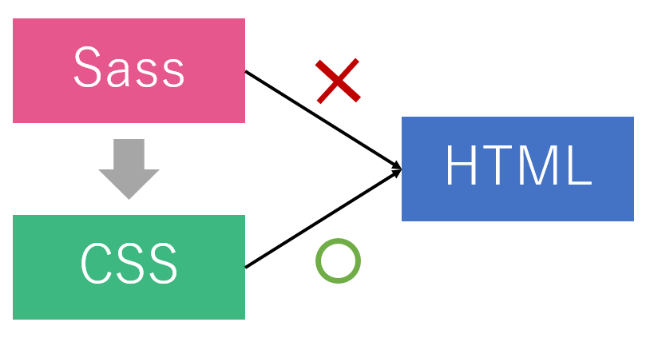
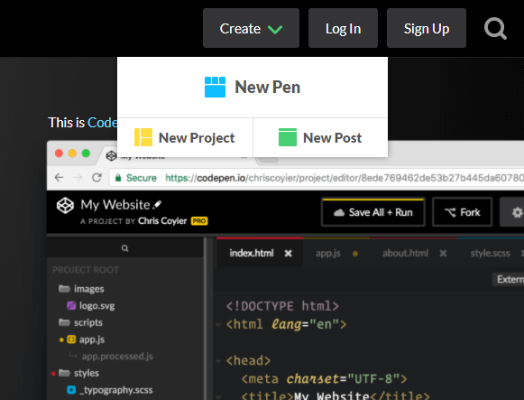
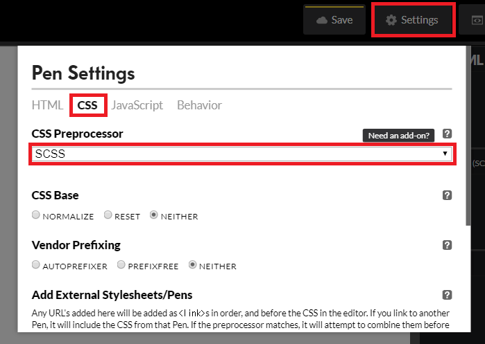

ある言語について何らかの記述をするための言語
↓Sass「CSSに対して機能を拡張した言語」
nav
margin: 0 auto
li
margin-left: 5px
nav {
margin: 0 auto;
li {
margin-left: 5px;
}
}
ブラウザはSassファイルを認識できない
nav ul { margin: 0; }
nav li { display: inline-block; }
nav {
ul { margin: 0; }
li { display: inline-block; }
}
$primary-color: #333;
body {
color: $primary-color;
}
body { color: #333; }
article {
width: 600px / 960px * 100%;
}
article {
width: 62.5%;
}
.button {
display: inline-block;
padding:20px;
border-radius: 30px;}
.button--red {
@extend .button;
background: red;
}
@mixin button{
display: inline-block;
padding: 10px;
}
.button--red {
@include button;
background: red;
}
@mixin button($color:white) {
padding: 10px;
background: $color;
}
.button--normal {@include button;}
.button--red {@include button(red);}
GUIのツールもありますがgulpが便利！
決まったコマンドを打つだけ！
CodePenでSassのコードを
実際に書いてみましょう
「Create」をクリックし、「New Pen」を選択
「Change View」をクリックし、
レイアウトを選択
「Settings > CSS > SCSS」を選択

変数が使えます
ボタン
ボタン
nav {
ul {
margin: 0;
padding: 0;
list-style: none;
}
li { display: inline-block; }
a {
display: block;
padding: 6px 12px;
text-decoration: none;
}
}
$red: #ff1122;
.notes {
color: $red;
border: 1px solid $red;
}
.tab {
.tab-item {
display: inline-block;
box-sizing: border-box;
background: #288092;
text-align: center;
padding: 20px 0;
width: (95%/3) ;
a {
color: #fff;
text-decoration: none;
}
}
}
.button {
display: inline-block;
background-color: #262e73;
color: #fff;
padding:20px;
}
.button-red {
@extend .button;
background: red;
}
JavaScriptで作られたサーバーサイド環境
必要なパッケージを簡単にインストール可！
様々な処理を自動化するツールである
タスクランナーの1つ
node -v
「test-project」というフォルダを任意の場所に作ります
「cd」と入力し、半角スペースを入力してから
作業用フォルダをドラッグ＆ドロップします
cd C:¥Users¥★★★¥test-project
完了したら「Enter」を押します
npm init -y
npm install -D gulp
「test-project」の中に「css」という
フォルダを作ります
npm install -D gulp gulp-sass
npx gulp -v
div {
p {
font-weight: bold;
}
}
$fontColor: #525252;
h1 {
color: $fontColor;
}
// gulpプラグインの読み込み
const gulp = require('gulp');
// Sassをコンパイルするプラグインの読み込み
const sass = require('gulp-sass');
// style.scssをタスクを作成する
gulp.task('default', function () {
// style.scssファイルを取得
gulp.src('css/style.scss')
// Sassのコンパイルを実行
.pipe(sass({
outputStyle: 'expanded'
}))
// cssフォルダー以下に保存
.pipe(gulp.dest('css'));
});
npx gulp
div p {
font-weight: bold;
}
h1 {
color: #525252;
}
watch機能を使ってSassファイルを自動コンパイルしてみよう
// gulpプラグインの読み込み
const gulp = require('gulp');
// Sassをコンパイルするプラグインの読み込み
const sass = require('gulp-sass');
// style.scssの監視タスクを作成する
gulp.task('default', function () {
// ★ style.scssファイルを監視
gulp.watch('css/style.scss', function () {
// style.scssの更新があった場合の処理
// style.scssファイルを取得
gulp.src('css/style.scss')
// Sassのコンパイルを実行
.pipe(sass({
outputStyle: 'expanded'
})
// Sassのコンパイルエラーを表示
// (これがないと自動的に止まってしまう)
.on('error', sass.logError))
// cssフォルダー以下に保存
.pipe(gulp.dest('css'));
});
});
npx gulp
Windows：Ctrl + C
Mac：control + c